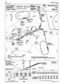

ILS (Instrument Landing System) je systém radiových zaøízení, používaný letadly na finále pøiblížení na pøistání pøi nepøíznivých meteorologických podmínkách. Tento systém pomáhá pilotùm navigovat jejich letoun smìrem k pøistávací dráze vybavené ILS.
ILS sestává ze dvou elektronických paprskù (tj. vysílaèù, které vysílají vysoce smìrové radiové vysílání): jeden poskytuje horizontální smìrování (smìrový paprsek, tzv. localizer), druhý poskytuje vertikální smìrování (sestupový paprsek, tzv. glideslope). Navíc k tìmto paprskùm je obvykle u prahu dráhy umístìno zaøízení DME. Dále jsou obvykle použity dva (nebo tøi) radiomajáky, které poskytují dodateèné informace o vzdálenosti od prahu dráhy.
Localizer vysílá radiový paprsek ve smìru osy pøistávací dráhy. Vysílaè sestupové roviny vysílá radiový paprsek stejným smìrem, ale s odchylkou od zemì, která odpovídá úhlu sestupové roviny (obvykle 3°). DME poskytuje pøesnou informaci o vzdálenosti od prahu dráhy. Majáky jsou tvoøeny anténními poli, které vysílají vertikální paprsek, který pilota informuje, že jeho letadlo se nachází nad konkrétním bodem. Obvykle jsou u ILS dva majáky, vnìjšní (OM, Outer Marker), a støední (MM, Middle Marker). Dráhy s ILS kategorie II a III mají také blízký radiomaják (IM, Inner Marker). Když letadlo pøelétá nad radiomajákem, v kabinì se rozsvítí svìtelný indikátor a pilot uslyší pøíslušnou zvukovou signalizaci:
| Marker | Zvuková signalizace | Svìtlo |
| OM | – – – | Modré |
| MM | . – . – | Oranžové |
| IM | . . . . | Bílé |
Když chce pilot použít ILS, naladí frekvenci jeho vysílaèe smìrového paprsku na hlavním NAV pøijímaèi. Frekvence vysílaèe sestupového paprsku je s frekvencí localizeru pevnì vázána a je naladìna automaticky. Obì ruèièky na displeji HSI nyní ukazují odchylku polohy letadla od sestupové roviny a smìru prodloužené osy dráhy. Pøijímaè DME zobrazuje vzdálenost k prahu dráhy. Pilot se snaží letìt "za ruèièkami" aby letadlo umístil na ideální pøímku pro pøiblížení. Radiomajáky mají pevnì dané frekvence, takže pilot je vùbec neladí. (Dokonce se èasto stává, že letadlo pøijímá signál radiomajáku v jiné fázi letu, když náhodou pøeletá nìjaký radiomaják.)
|  | Tohle je pøíklad pøibližovací mapy pro dráhu vybavenou zaøízením ILS. Mapa obsahuje všechny potøebné frekvence, kurzy a další informace potøebné pro ILS pøiblížení. |
Zde si mùžete vyzkoušet, co pilot vidí v prùbìhu ILS pøiblížení. Stisknutím smìrových kláves otáèíte letadlem, stisknutím mezerníku se letadlo pohne o kousek vpøed. Pokuste se navigovat letadlo na pøistávací dráhu.
Také mùžete klepnutím levým tlaèítkem myši na horní mapu pøesunout letadlo, nebo pravým tlaèítkem myši natoèit letadlo smìrem k vybranému bodu. Na dolní mapì kliknutím levým tlaèítkem zmìníte výšku letadla, nebo pravým tlaèítkem natoèíte letadlo nahoru/dolù.
Pøístroje vespod jsou (zleva):
{kind=link}